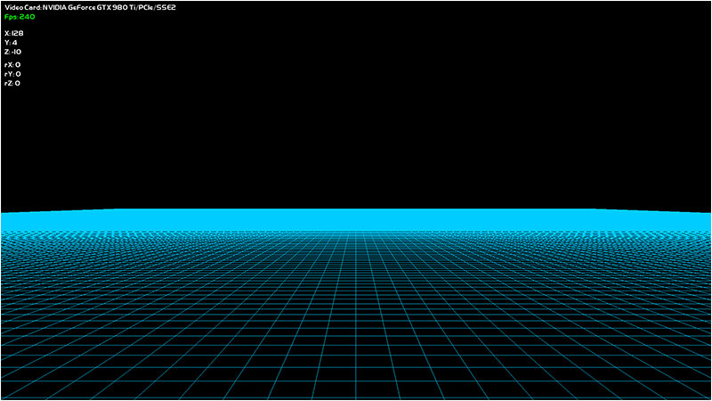
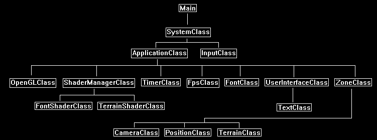

This tutorial will cover the basics of rendering a terrain grid using OpenGL 4.0 on Linux.
Before getting into more advanced terrain concepts you should be able to render a basic grid and have good camera functionality; and that will be the purpose of this tutorial.
With a good camera that can move around the terrain easily it can help debugging issues that occur during development.
Having good debugging tools is always the key to speeding up development and ensuring quality.

As shown in the screenshot above we will be rendering a basic 256x256 unit flat terrain as well as a simple text user interface to display our position, fps, and so forth.
For this first tutorial the initial terrain grid will just be composed of quads made out of lines.
The terrain grid will be encapsulated in a new class called TerrainClass.
Note that most of the other classes in these tutorials are based on the OpenGL 4.0 tutorials section, so they won't be covered again during these tutorials unless we modify them.
The camera functionality will be encapsulated in a new class named PositionClass.
CameraClass is still used to make the view matrix, I've just separated the functionality out between the two classes.
PositionClass will maintain the position and rotation of the camera as well as the acceleration and deceleration so that the camera moves smoothly around the terrain.
And finally we use TextClass to display the FPS, video card information, and position/rotation of the camera.
These new classes plus learning the new framework will be the extent of this first tutorial.
The Framework
The following framework will be used as a basis for all of the OpenGL 4.0 terrain tutorials.
This framework contains mostly the same classes as the OpenGL 4.0 tutorial series but has a few new ones which we will cover in this tutorial.

Note that the TerrainShaderClass is just a copy of the ColorShaderClass since we are only drawing colored lines in the first tutorial.
But in future tutorials this will be the shader that we will spend most of the time updating with new features.
Applicationclass.h
The ApplicationClass is the main wrapper class for the entire terrain application.
It will handle all the graphics, input, sound, processing, and so forth.
///////////////////////////////////////////////////////////////////////////////
// Filename: applicationclass.h
///////////////////////////////////////////////////////////////////////////////
#ifndef _APPLICATIONCLASS_H_
#define _APPLICATIONCLASS_H_
/////////////
// GLOBALS //
/////////////
const bool FULL_SCREEN = true;
const bool VSYNC_ENABLED = true;
const float SCREEN_DEPTH = 1000.0f;
const float SCREEN_NEAR = 0.3f;
///////////////////////
// MY CLASS INCLUDES //
///////////////////////
#include "openglclass.h"
#include "shadermanagerclass.h"
#include "inputclass.h"
#include "timerclass.h"
#include "fpsclass.h"
#include "fontclass.h"
#include "userinterfaceclass.h"
#include "zoneclass.h"
////////////////////////////////////////////////////////////////////////////////
// Class name: ApplicationClass
////////////////////////////////////////////////////////////////////////////////
class ApplicationClass
{
public:
ApplicationClass();
ApplicationClass(const ApplicationClass&);
~ApplicationClass();
bool Initialize(Display*, Window, int, int);
void Shutdown();
bool Frame(InputClass*);
private:
OpenGLClass* m_OpenGL;
ShaderManagerClass* m_ShaderManager;
TimerClass* m_Timer;
FpsClass* m_Fps;
FontClass* m_Font;
UserInterfaceClass* m_UserInterface;
ZoneClass* m_Zone;
};
#endif
Applicationclass.cpp
////////////////////////////////////////////////////////////////////////////////
// Filename: applicationclass.cpp
////////////////////////////////////////////////////////////////////////////////
#include "applicationclass.h"
The class constructor initializes all the object pointers to null.
ApplicationClass::ApplicationClass()
{
m_OpenGL = 0;
m_ShaderManager = 0;
m_Timer = 0;
m_Fps = 0;
m_Font = 0;
m_UserInterface = 0;
m_Zone = 0;
}
ApplicationClass::ApplicationClass(const ApplicationClass& other)
{
}
ApplicationClass::~ApplicationClass()
{
}
bool ApplicationClass::Initialize(Display* display, Window win, int screenWidth, int screenHeight)
{
bool result;
Create and initialize the OpenGLClass object.
This object will handle the main portions of the OpenGL 4.0 graphics interface.
// Create and initialize the OpenGL object.
m_OpenGL = new OpenGLClass;
result = m_OpenGL->Initialize(display, win, screenWidth, screenHeight, SCREEN_NEAR, SCREEN_DEPTH, VSYNC_ENABLED);
if(!result)
{
cout << "Error: Could not initialize the OpenGL object." << endl;
return false;
}
Create and initialize the shader manager object.
The ShaderManager is the wrapper classes for all OpenGL 4.0 shader functionality.
Encapsulating everything into this manager style class allows us to pass a single pointer into any class or function and they now have access to all of the shaders we have written.
// Create and initialize the shader manager object.
m_ShaderManager = new ShaderManagerClass;
result = m_ShaderManager->Initialize(m_OpenGL);
if(!result)
{
cout << "Error: Could not initialize the shader manager object." << endl;
return false;
}
Create and initialize the timer object.
// Create and initialize the timer object.
m_Timer = new TimerClass;
m_Timer->Initialize();
Create and initialize the FPS object.
// Create and initialize the fps object.
m_Fps = new FpsClass();
m_Fps->Initialize();
Create and initialize the font object.
// Create and initialize the font object.
m_Font = new FontClass;
result = m_Font->Initialize(m_OpenGL);
if(!result)
{
cout << "Error: Could not initialize the font object." << endl;
return false;
}
Create and initialize the user interface object.
We will use this for rendering text to the screen such as the fps and position coordinates.
// Create and initialize the user interface object.
m_UserInterface = new UserInterfaceClass;
result = m_UserInterface->Initialize(m_OpenGL, m_Font, screenHeight, screenWidth);
if(!result)
{
cout << "Error: Could not initialize the user interface object." << endl;
return false;
}
Create and initialize the zone object.
The zone object is where we put all of our terrain rendering and processing.
This class will be used to easily instantiate new terrain zones and encapsulate anything else related to the terrain such as trees, skies, foliage, and so forth.
We will also modify this class to be data driven so that we can edit a single text file and the zone will populate itself accordingly without any code changes.
ZoneClass and the TerrainClass will be the two major classes for this tutorial and all future tutorials.
// Create and initialize the zone object.
m_Zone = new ZoneClass;
result = m_Zone->Initialize(m_OpenGL);
if(!result)
{
cout << "Error: Could not initialize the zone object." << endl;
return false;
}
return true;
}
The Shutdown function will release all the objects that were created in the Initialize function.
void ApplicationClass::Shutdown()
{
// Release the zone object.
if(m_Zone)
{
m_Zone->Shutdown(m_OpenGL);
delete m_Zone;
m_Zone = 0;
}
// Release the user interface object.
if(m_UserInterface)
{
m_UserInterface->Shutdown();
delete m_UserInterface;
m_UserInterface = 0;
}
// Release the font object.
if(m_Font)
{
m_Font->Shutdown();
delete m_Font;
m_Font = 0;
}
// Release the fps object.
if(m_Fps)
{
delete m_Fps;
m_Fps = 0;
}
// Release the timer object.
if(m_Timer)
{
delete m_Timer;
m_Timer = 0;
}
// Release the shader manager object.
if(m_ShaderManager)
{
m_ShaderManager->Shutdown();
delete m_ShaderManager;
m_ShaderManager = 0;
}
// Release the OpenGL object.
if(m_OpenGL)
{
m_OpenGL->Shutdown();
delete m_OpenGL;
m_OpenGL = 0;
}
return;
}
The Frame function does the per frame loop processing for the entire application.
All of the major objects frame processing must be called here.
bool ApplicationClass::Frame(InputClass* Input)
{
bool result;
// Update the system timer.
m_Timer->Frame();
// Update the fps each frame.
m_Fps->Frame();
// Check if the user pressed escape and wants to exit the application.
if(Input->IsEscapePressed() == true)
{
return false;
}
// Perform the user interface processing.
result = m_UserInterface->Frame(m_Font, m_Fps->GetFps());
if(!result)
{
return false;
}
// Perform the zone frame processing.
result = m_Zone->Frame(m_OpenGL, m_ShaderManager, m_Font, m_UserInterface, Input, m_Timer->GetTime());
if(!result)
{
return false;
}
return true;
}
Zoneclass.h
The zone class is the main wrapper class for all of the terrain processing as well as anything that would be related to the terrain.
Currently it will just move the camera around the terrain grid, but in future tutorials it will be expanded to handle sky, trees, foliage, and other objects related to the terrain.
We will also try to keep this class fairly generic so that in future tutorials it can just read a text file and populate the zone without any need for code changes.
For this tutorial the ZoneClass will handle all the camera movement, render the terrain grid, and render the input user interface.
///////////////////////////////////////////////////////////////////////////////
// Filename: zoneclass.h
///////////////////////////////////////////////////////////////////////////////
#ifndef _ZONECLASS_H_
#define _ZONECLASS_H_
///////////////////////
// MY CLASS INCLUDES //
///////////////////////
#include "openglclass.h"
#include "inputclass.h"
#include "userinterfaceclass.h"
#include "cameraclass.h"
#include "positionclass.h"
#include "terrainclass.h"
////////////////////////////////////////////////////////////////////////////////
// Class name: ZoneClass
////////////////////////////////////////////////////////////////////////////////
class ZoneClass
{
public:
ZoneClass();
ZoneClass(const ZoneClass&);
~ZoneClass();
bool Initialize(OpenGLClass*);
void Shutdown(OpenGLClass*);
bool Frame(OpenGLClass*, ShaderManagerClass*, FontClass*, UserInterfaceClass*, InputClass*, float);
private:
bool Render(OpenGLClass*, ShaderManagerClass*, FontClass*, UserInterfaceClass*);
void HandleMovementInput(InputClass*, float);
private:
CameraClass* m_Camera;
PositionClass* m_Position;
TerrainClass* m_Terrain;
};
#endif
Zoneclass.cpp
////////////////////////////////////////////////////////////////////////////////
// Filename: zoneclass.cpp
////////////////////////////////////////////////////////////////////////////////
#include "zoneclass.h"
ZoneClass::ZoneClass()
{
m_Camera = 0;
m_Position = 0;
m_Terrain = 0;
}
ZoneClass::ZoneClass(const ZoneClass& other)
{
}
ZoneClass::~ZoneClass()
{
}
The Initialize function will create and initialize the camera, the position object, and the terrain grid.
bool ZoneClass::Initialize(OpenGLClass* OpenGL)
{
bool result;
// Create and initialize the camera object.
m_Camera = new CameraClass;
m_Camera->SetPosition(0.0f, 0.0f, -10.0f);
m_Camera->Render();
m_Camera->RenderBaseViewMatrix();
// Create and initialize the position object.
m_Position = new PositionClass;
m_Position->SetPosition(128.0f, 5.0f, -10.0f);
m_Position->SetRotation(0.0f, 0.0f, 0.0f);
// Create and initialize the terrain object.
m_Terrain = new TerrainClass;
result = m_Terrain->Initialize(OpenGL);
if(!result)
{
cout << "Error: Could not initialize the terrain object." << endl;
return false;
}
return true;
}
The Shutdown function will release all of the objects that we had originally created in the Initialize function.
This function will be called when the application is exiting or if we wish to destroy this zone and then create a new one.
void ZoneClass::Shutdown(OpenGLClass* OpenGL)
{
// Release the terrain object.
if(m_Terrain)
{
m_Terrain->Shutdown(OpenGL);
delete m_Terrain;
m_Terrain = 0;
}
// Release the position object.
if(m_Position)
{
delete m_Position;
m_Position = 0;
}
// Release the camera object.
if(m_Camera)
{
delete m_Camera;
m_Camera = 0;
}
return;
}
The Frame function handles the updating loop for the zone and is called every 16.67 milliseconds if we lock to 60 frames per second.
Any object that needs to be updated each frame is updated in this function.
And once all the objects have called their frame processing this function will then call the ZoneClass::Render function to do all the drawing of the zone.
bool ZoneClass::Frame(OpenGLClass* OpenGL, ShaderManagerClass* ShaderManager, FontClass* Font, UserInterfaceClass* UserInterface, InputClass* Input, float frameTime)
{
float posX, posY, posZ, rotX, rotY, rotZ;
bool result;
// Do the frame input processing for the movement.
HandleMovementInput(Input, frameTime);
// Get the view point position/rotation.
m_Position->GetPosition(posX, posY, posZ);
m_Position->GetRotation(rotX, rotY, rotZ);
// Update the UI with the position.
UserInterface->UpdatePositonStrings(Font, posX, posY, posZ, rotX, rotY, rotZ);
// Render the zone.
result = Render(OpenGL, ShaderManager, Font, UserInterface);
if(!result)
{
return false;
}
return true;
}
The Render function handles all the graphics processing for the zone.
For this tutorial it gets all the matrices it needs and then renders the terrain and user interface using those matrices.
bool ZoneClass::Render(OpenGLClass* OpenGL, ShaderManagerClass* ShaderManager, FontClass* Font, UserInterfaceClass* UserInterface)
{
float worldMatrix[16], viewMatrix[16], projectionMatrix[16], baseViewMatrix[16], orthoMatrix[16];
bool result;
// Get the world, view, and ortho matrices from the opengl and camera objects.
OpenGL->GetWorldMatrix(worldMatrix);
m_Camera->GetViewMatrix(viewMatrix);
OpenGL->GetProjectionMatrix(projectionMatrix);
m_Camera->GetBaseViewMatrix(baseViewMatrix);
OpenGL->GetOrthoMatrix(orthoMatrix);
// Clear the scene.
OpenGL->BeginScene(0.0f, 0.0f, 0.0f, 1.0f);
// Render the terrain using the terrain shader.
result = m_Terrain->Render(OpenGL, ShaderManager, worldMatrix, viewMatrix, projectionMatrix);
if(!result)
{
return false;
}
// Render the user interface.
result = UserInterface->Render(OpenGL, ShaderManager, Font, worldMatrix, baseViewMatrix, orthoMatrix);
if(!result)
{
return false;
}
// Present the rendered scene to the screen.
OpenGL->EndScene();
return true;
}
The HandleInput function does all the processing related to the user input from the keyboard and mouse.
This function is called each frame in the ZoneClass::Frame function.
void ZoneClass::HandleMovementInput(InputClass* Input, float frameTime)
{
float posX, posY, posZ, rotX, rotY, rotZ;
bool keyDown;
The very first thing that is done is the frame time is set in the PositionClass object.
The reason being is that the frame time is required by all the following movement calculation functions.
If it is not set then the movement will not be accurate.
// Set the frame time for calculating the updated position.
m_Position->SetFrameTime(frameTime);
Next the user input is determined for each of the eight movement types.
The forward, backward, turn left, and turn right functions are updated by the arrow keys.
The up and down movement functions are updated by the A and Z keys.
The look up and look down rotation functions are updated by the PgUp and PgDn keys.
If the user is pressing the key then a true boolean value will be sent to the appropriate function.
If not then false is sent to each.
This allows us to accelerate if the user is holding down the movement key or decelerate if the user is not holding down that movement key.
// Check if the input keys have been pressed. If so, then update the position accordingly.
keyDown = Input->IsLeftPressed();
m_Position->TurnLeft(keyDown);
keyDown = Input->IsRightPressed();
m_Position->TurnRight(keyDown);
keyDown = Input->IsUpPressed();
m_Position->MoveForward(keyDown);
keyDown = Input->IsDownPressed();
m_Position->MoveBackward(keyDown);
keyDown = Input->IsAPressed();
m_Position->MoveUpward(keyDown);
keyDown = Input->IsZPressed();
m_Position->MoveDownward(keyDown);
keyDown = Input->IsPgUpPressed();
m_Position->LookUpward(keyDown);
keyDown = Input->IsPgDownPressed();
m_Position->LookDownward(keyDown);
After the movement for this frame has been calculated we then get the position and rotation from the PositionObject and update the CameraClass and TextClass object
with the new viewing position.
// Get the view point position/rotation.
m_Position->GetPosition(posX, posY, posZ);
m_Position->GetRotation(rotX, rotY, rotZ);
// Set the position of the camera.
m_Camera->SetPosition(posX, posY, posZ);
m_Camera->SetRotation(rotX, rotY, rotZ);
// Update the camera view matrix for rendering.
m_Camera->Render();
return;
}
Terrainclass.h
The terrain class will encapsulate the model data and rendering functionality for drawing the 256x256 line grid.
This class contains only the basics for now since this tutorial is just focused on getting a very basic terrain grid drawn first.
////////////////////////////////////////////////////////////////////////////////
// Filename: terrainclass.h
////////////////////////////////////////////////////////////////////////////////
#ifndef _TERRAINCLASS_H_
#define _TERRAINCLASS_H_
///////////////////////
// MY CLASS INCLUDES //
///////////////////////
#include "openglclass.h"
#include "shadermanagerclass.h"
////////////////////////////////////////////////////////////////////////////////
// Class name: TerrainClass
////////////////////////////////////////////////////////////////////////////////
class TerrainClass
{
private:
The vertex data/structure for the terrain will just be position and color as we are only drawing white lines to start with.
struct VertexType
{
float x, y, z;
float r, g, b;
};
public:
TerrainClass();
TerrainClass(const TerrainClass&);
~TerrainClass();
The TerrainClass has the usual public and private functions for loading, releasing, and rendering the terrain.
bool Initialize(OpenGLClass*);
void Shutdown(OpenGLClass*);
bool Render(OpenGLClass*, ShaderManagerClass*, float*, float*, float*);
private:
bool InitializeBuffers(OpenGLClass*);
void ShutdownBuffers(OpenGLClass*);
void RenderBuffers(OpenGLClass*);
private:
int m_vertexCount, m_indexCount;
unsigned int m_vertexArrayId, m_vertexBufferId, m_indexBufferId;
};
#endif
Terrainclass.cpp
///////////////////////////////////////////////////////////////////////////////
// Filename: terrainclass.cpp
///////////////////////////////////////////////////////////////////////////////
#include "terrainclass.h"
TerrainClass::TerrainClass()
{
}
TerrainClass::TerrainClass(const TerrainClass& other)
{
}
TerrainClass::~TerrainClass()
{
}
For now the Initialize function will just call the function for initializing the vertex and index buffers that will hold the terrain grid data.
bool TerrainClass::Initialize(OpenGLClass* OpenGL)
{
bool result;
// Initialize the vertex and index buffer that hold the geometry for the terrain.
result = InitializeBuffers(OpenGL);
if(!result)
{
return false;
}
return true;
}
Shutdown calls the ShutdownBuffers function to release the vertex and index buffers that are holding the terrain grid data.
void TerrainClass::Shutdown(OpenGLClass* OpenGL)
{
// Release the vertex and index buffers.
ShutdownBuffers(OpenGL);
return;
}
The Render function calls RenderBuffers to put the terrain grid data on the graphics pipeline so the TerrainShaderClass object can then render it.
This is done in the ZoneClass::Render function.
bool TerrainClass::Render(OpenGLClass* OpenGL, ShaderManagerClass* ShaderManager, float* worldMatrix, float* viewMatrix, float* projectionMatrix)
{
bool result;
// Set the terrain shader as the current shader program and set the matrices that it will use for rendering.
result = ShaderManager->RenderTerrainShader(worldMatrix, viewMatrix, projectionMatrix);
if(!result)
{
return false;
}
// Put the vertex and index buffers on the graphics pipeline to prepare them for drawing.
RenderBuffers(OpenGL);
return true;
}
The InitializeBuffers function creates the vertex and index buffers used to hold the terrain grid data.
The terrain is going to be composed of lines forming squares.
In OpenGL 4.0 to draw a line you need two points, and to draw a square you need eight points to form the four lines.
So in the code below you will see a for loop that creates each square in the 256x256 grid using eight points to create four lines.
It is not efficient but it is fine just to quickly see something working.
Since we aren't loading a model I use a vertex and index array to create the terrain grid and then I create a vertex and index buffer from those arrays.
bool TerrainClass::InitializeBuffers(OpenGLClass* OpenGL)
{
VertexType* vertices;
unsigned int* indices;
int terrainHeight, terrainWidth, index, i, j;
float red, green, blue;
Set the size and color of the terrain grid.
// Set the height and width of the terrain grid.
terrainHeight = 256;
terrainWidth = 256;
// Set the color of the terrain grid.
red = 0.0f;
green = 0.8f;
blue = 1.0f;
Determine the number of vertices and indices in the 256x256 grid.
// Calculate the number of vertices in the terrain.
m_vertexCount = (terrainHeight - 1) * (terrainWidth - 1) * 8;
// Set the index count to the same as the vertex count.
m_indexCount = m_vertexCount;
Create the temporary vertex and index arrays.
// Create the vertex array.
vertices = new VertexType[m_vertexCount];
// Create the index array.
indices = new unsigned int[m_indexCount];
Load the vertex and index arrays with the line lists that will form the 256x256 terrain grid.
// Initialize the index into the vertex and index arrays.
index = 0;
// Load the vertex array and index array with data.
for(j=0; j<(terrainHeight-1); j++)
{
for(i=0; i<(terrainWidth-1); i++)
{
// Line 1 - Upper left.
vertices[index].x = (float)i;
vertices[index].y = 0.0f;
vertices[index].z = (float)(j+1);
vertices[index].r = red;
vertices[index].g = green;
vertices[index].b = blue;
indices[index] = index;
index++;
// Line 1 - Upper right.
vertices[index].x = (float)(i+1);
vertices[index].y = 0.0f;
vertices[index].z = (float)(j+1);
vertices[index].r = red;
vertices[index].g = green;
vertices[index].b = blue;
indices[index] = index;
index++;
// Line 2 - Upper right.
vertices[index].x = (float)(i+1);
vertices[index].y = 0.0f;
vertices[index].z = (float)(j+1);
vertices[index].r = red;
vertices[index].g = green;
vertices[index].b = blue;
indices[index] = index;
index++;
// Line 2 - Bottom right.
vertices[index].x = (float)(i+1);
vertices[index].y = 0.0f;
vertices[index].z = (float)j;
vertices[index].r = red;
vertices[index].g = green;
vertices[index].b = blue;
indices[index] = index;
index++;
// Line 3 - Bottom right.
vertices[index].x = (float)(i+1);
vertices[index].y = 0.0f;
vertices[index].z = (float)j;
vertices[index].r = red;
vertices[index].g = green;
vertices[index].b = blue;
indices[index] = index;
index++;
// Line 3 - Bottom left.
vertices[index].x = (float)i;
vertices[index].y = 0.0f;
vertices[index].z = (float)j;
vertices[index].r = red;
vertices[index].g = green;
vertices[index].b = blue;
indices[index] = index;
index++;
// Line 4 - Bottom left.
vertices[index].x = (float)i;
vertices[index].y = 0.0f;
vertices[index].z = (float)j;
vertices[index].r = red;
vertices[index].g = green;
vertices[index].b = blue;
indices[index] = index;
index++;
// Line 4 - Bottom left.
vertices[index].x = (float)i;
vertices[index].y = 0.0f;
vertices[index].z = (float)(j+1);
vertices[index].r = red;
vertices[index].g = green;
vertices[index].b = blue;
indices[index] = index;
index++;
}
}
Create the vertex and index buffers from the vertex and index arrays.
// Allocate an OpenGL vertex array object.
OpenGL->glGenVertexArrays(1, &m_vertexArrayId);
// Bind the vertex array object to store all the buffers and vertex attributes we create here.
OpenGL->glBindVertexArray(m_vertexArrayId);
// Generate an ID for the vertex buffer.
OpenGL->glGenBuffers(1, &m_vertexBufferId);
// Bind the vertex buffer and load the vertex (position and color) data into the vertex buffer.
OpenGL->glBindBuffer(GL_ARRAY_BUFFER, m_vertexBufferId);
OpenGL->glBufferData(GL_ARRAY_BUFFER, m_vertexCount * sizeof(VertexType), vertices, GL_STATIC_DRAW);
// Enable the two vertex array attributes.
OpenGL->glEnableVertexAttribArray(0); // Vertex position.
OpenGL->glEnableVertexAttribArray(1); // Vertex color.
// Specify the location and format of the position portion of the vertex buffer.
OpenGL->glVertexAttribPointer(0, 3, GL_FLOAT, false, sizeof(VertexType), 0);
// Specify the location and format of the color portion of the vertex buffer.
OpenGL->glVertexAttribPointer(1, 3, GL_FLOAT, false, sizeof(VertexType), (unsigned char*)NULL + (3 * sizeof(float)));
// Generate an ID for the index buffer.
OpenGL->glGenBuffers(1, &m_indexBufferId);
// Bind the index buffer and load the index data into it.
OpenGL->glBindBuffer(GL_ELEMENT_ARRAY_BUFFER, m_indexBufferId);
OpenGL->glBufferData(GL_ELEMENT_ARRAY_BUFFER, m_indexCount* sizeof(unsigned int), indices, GL_STATIC_DRAW);
Finally release the arrays since the data is now stored in the buffers.
// Now that the buffers have been loaded we can release the array data.
delete [] vertices;
vertices = 0;
delete [] indices;
indices = 0;
return true;
}
The ShutdownBuffers function releases the vertex array object, the vertex buffer, and the index buffer that were used to hold the terrain grid data.
void TerrainClass::ShutdownBuffers(OpenGLClass* OpenGL)
{
// Release the vertex array object.
OpenGL->glBindVertexArray(0);
OpenGL->glDeleteVertexArrays(1, &m_vertexArrayId);
// Release the vertex buffer.
OpenGL->glBindBuffer(GL_ARRAY_BUFFER, 0);
OpenGL->glDeleteBuffers(1, &m_vertexBufferId);
// Release the index buffer.
OpenGL->glBindBuffer(GL_ELEMENT_ARRAY_BUFFER, 0);
OpenGL->glDeleteBuffers(1, &m_indexBufferId);
return;
}
RenderBuffers places the line list terrain grid on the graphics pipeline for rendering.
Notice that we use GL_LINES to draw lines instead of triangles in this tutorial.
void TerrainClass::RenderBuffers(OpenGLClass* OpenGL)
{
// Bind the vertex array object that stored all the information about the vertex and index buffers.
OpenGL->glBindVertexArray(m_vertexArrayId);
// Render the vertex buffer as lines using the index buffer.
glDrawElements(GL_LINES, m_indexCount, GL_UNSIGNED_INT, 0);
return;
}
Positionclass.h
The PositionClass is the class that encapsulates the camera/viewer location and the camera movement functionality.
////////////////////////////////////////////////////////////////////////////////
// Filename: positionclass.h
////////////////////////////////////////////////////////////////////////////////
#ifndef _POSITIONCLASS_H_
#define _POSITIONCLASS_H_
//////////////
// INCLUDES //
//////////////
#include <math.h>
////////////////////////////////////////////////////////////////////////////////
// Class name: PositionClass
////////////////////////////////////////////////////////////////////////////////
class PositionClass
{
public:
PositionClass();
PositionClass(const PositionClass&);
~PositionClass();
The PositionClass has some helper functions to set and retrieve the position and rotation of the viewer/camera.
void SetPosition(float, float, float);
void SetRotation(float, float, float);
void GetPosition(float&, float&, float&);
void GetRotation(float&, float&, float&);
SetFrameTime is used to keep the viewer/camera in sync with the speed of the application.
void SetFrameTime(float);
The movement functions are called to move the viewer/camera based on the user input.
void MoveForward(bool);
void MoveBackward(bool);
void MoveUpward(bool);
void MoveDownward(bool);
void TurnLeft(bool);
void TurnRight(bool);
void LookUpward(bool);
void LookDownward(bool);
private:
float m_positionX, m_positionY, m_positionZ;
float m_rotationX, m_rotationY, m_rotationZ;
float m_frameTime;
float m_forwardSpeed, m_backwardSpeed;
float m_upwardSpeed, m_downwardSpeed;
float m_leftTurnSpeed, m_rightTurnSpeed;
float m_lookUpSpeed, m_lookDownSpeed;
};
#endif
Positionclass.cpp
////////////////////////////////////////////////////////////////////////////////
// Filename: positionclass.cpp
////////////////////////////////////////////////////////////////////////////////
#include "positionclass.h"
The class constructor initializes all the position, rotation, frame time, and speed variables to zero.
PositionClass::PositionClass()
{
m_positionX = 0.0f;
m_positionY = 0.0f;
m_positionZ = 0.0f;
m_rotationX = 0.0f;
m_rotationY = 0.0f;
m_rotationZ = 0.0f;
m_frameTime = 0.0f;
m_forwardSpeed = 0.0f;
m_backwardSpeed = 0.0f;
m_upwardSpeed = 0.0f;
m_downwardSpeed = 0.0f;
m_leftTurnSpeed = 0.0f;
m_rightTurnSpeed = 0.0f;
m_lookUpSpeed = 0.0f;
m_lookDownSpeed = 0.0f;
}
PositionClass::PositionClass(const PositionClass& other)
{
}
PositionClass::~PositionClass()
{
}
The SetPosition and SetRotation functions are used for setting the position and rotation of the viewer/camera.
These functions are generally used to initialize the position of the camera other than at the origin.
In this tutorial the camera will be set slightly back from the grid and in the center of it.
void PositionClass::SetPosition(float x, float y, float z)
{
m_positionX = x;
m_positionY = y;
m_positionZ = z;
return;
}
void PositionClass::SetRotation(float x, float y, float z)
{
m_rotationX = x;
m_rotationY = y;
m_rotationZ = z;
return;
}
The GetPosition and GetRotation functions return the current position and rotation of the camera location.
In this tutorial these functions are called to provide the location and rotation of the camera for display purposes.
We will draw the position/rotation as text strings on the left side of the screen.
This is very useful for debugging.
void PositionClass::GetPosition(float& x, float& y, float& z)
{
x = m_positionX;
y = m_positionY;
z = m_positionZ;
return;
}
void PositionClass::GetRotation(float& x, float& y, float& z)
{
x = m_rotationX;
y = m_rotationY;
z = m_rotationZ;
return;
}
The SetFrameTime function needs to be called each frame.
It stores the current frame time inside a private member variable and is then used by the movement calculation functions.
This way, regardless of the speed that the application is running at, the movement and rotation speed will remain consistent.
If this wasn't done then the movement rate would speed up or down with the frame rate.
void PositionClass::SetFrameTime(float time)
{
m_frameTime = time;
return;
}
The following eight movement functions all work nearly the same.
All eight functions are called each frame.
The keydown input variable to each function indicates if the user is pressing the forward key, the backward key, and so forth.
If they are pressing the key then each frame the speed will accelerate until it hits a maximum.
This way the camera speeds up similar to the acceleration in a vehicle creating the effect of smooth movement and high responsiveness.
Likewise if the user releases the key and the keydown variable is false it will then smoothly slow down each frame until the speed hits zero.
The speed is calculated against the frame time to ensure the movement speed remains the same regardless of the frame rate.
Each function then uses some basic math to calculate the new position of the viewer/camera.
This function calculates the forward speed and movement of the viewer/camera.
void PositionClass::MoveForward(bool keydown)
{
float radians;
// Update the forward speed movement based on the frame time and whether the user is holding the key down or not.
if(keydown)
{
m_forwardSpeed += m_frameTime * 1.0f;
if(m_forwardSpeed > (m_frameTime * 50.0f))
{
m_forwardSpeed = m_frameTime * 50.0f;
}
}
else
{
m_forwardSpeed -= m_frameTime * 0.5f;
if(m_forwardSpeed < 0.0f)
{
m_forwardSpeed = 0.0f;
}
}
// Convert degrees to radians.
radians = m_rotationY * 0.0174532925f;
// Update the position.
m_positionX += sinf(radians) * m_forwardSpeed;
m_positionZ += cosf(radians) * m_forwardSpeed;
return;
}
This function calculates the backward speed and movement of the viewer/camera.
void PositionClass::MoveBackward(bool keydown)
{
float radians;
// Update the backward speed movement based on the frame time and whether the user is holding the key down or not.
if(keydown)
{
m_backwardSpeed += m_frameTime * 1.0f;
if(m_backwardSpeed > (m_frameTime * 50.0f))
{
m_backwardSpeed = m_frameTime * 50.0f;
}
}
else
{
m_backwardSpeed -= m_frameTime * 0.5ff
if(m_backwardSpeed < 0.0f)
{
m_backwardSpeed = 0.0f;
}
}
// Convert degrees to radians.
radians = m_rotationY * 0.0174532925f;
// Update the position.
m_positionX -= sinf(radians) * m_backwardSpeed;
m_positionZ -= cosf(radians) * m_backwardSpeed;
return;
}
This function calculates the upward speed and movement of the viewer/camera.
void PositionClass::MoveUpward(bool keydown)
{
// Update the upward speed movement based on the frame time and whether the user is holding the key down or not.
if(keydown)
{
m_upwardSpeed += m_frameTime * 1.5f;
if(m_upwardSpeed > (m_frameTime * 15.0f))
{
m_upwardSpeed = m_frameTime * 15.0f;
}
}
else
{
m_upwardSpeed -= m_frameTime * 0.5f;
if(m_upwardSpeed < 0.0f)
{
m_upwardSpeed = 0.0f;
}
}
// Update the height position.
m_positionY += m_upwardSpeed;
return;
}
This function calculates the downward speed and movement of the viewer/camera.
void PositionClass::MoveDownward(bool keydown)
{
// Update the downward speed movement based on the frame time and whether the user is holding the key down or not.
if(keydown)
{
m_downwardSpeed += m_frameTime * 1.5f;
if(m_downwardSpeed > (m_frameTime * 15.0f))
{
m_downwardSpeed = m_frameTime * 15.0f;
}
}
else
{
m_downwardSpeed -= m_frameTime * 0.5f;
if(m_downwardSpeed < 0.0f)
{
m_downwardSpeed = 0.0f;
}
}
// Update the height position.
m_positionY -= m_downwardSpeed;
return;
}
This function calculates the left turn speed and rotation of the viewer/camera.
void PositionClass::TurnLeft(bool keydown)
{
// Update the left turn speed movement based on the frame time and whether the user is holding the key down or not.
if(keydown)
{
m_leftTurnSpeed += m_frameTime * 5.0f;
if(m_leftTurnSpeed > (m_frameTime * 150.0f))
{
m_leftTurnSpeed = m_frameTime * 150.0f;
}
}
else
{
m_leftTurnSpeed -= m_frameTime* 3.5f;
if(m_leftTurnSpeed < 0.0f)
{
m_leftTurnSpeed = 0.0f;
}
}
// Update the rotation.
m_rotationY -= m_leftTurnSpeed;
// Keep the rotation in the 0 to 360 range.
if(m_rotationY < 0.0f)
{
m_rotationY += 360.0f;
}
return;
}
This function calculates the right turn speed and rotation of the viewer/camera.
void PositionClass::TurnRight(bool keydown)
{
// Update the right turn speed movement based on the frame time and whether the user is holding the key down or not.
if(keydown)
{
m_rightTurnSpeed += m_frameTime * 5.0f;
if(m_rightTurnSpeed > (m_frameTime * 150.0f))
{
m_rightTurnSpeed = m_frameTime * 150.0f;
}
}
else
{
m_rightTurnSpeed -= m_frameTime* 3.5f;
if(m_rightTurnSpeed < 0.0f)
{
m_rightTurnSpeed = 0.0f;
}
}
// Update the rotation.
m_rotationY += m_rightTurnSpeed;
// Keep the rotation in the 0 to 360 range.
if(m_rotationY > 360.0f)
{
m_rotationY -= 360.0f;
}
return;
}
This function calculates the upward turn speed and rotation of the viewer/camera.
void PositionClass::LookUpward(bool keydown)
{
// Update the upward rotation speed movement based on the frame time and whether the user is holding the key down or not.
if(keydown)
{
m_lookUpSpeed += m_frameTime * 7.5f;
if(m_lookUpSpeed > (m_frameTime * 75.0f))
{
m_lookUpSpeed = m_frameTime * 75.0f;
}
}
else
{
m_lookUpSpeed -= m_frameTime* 2.0f;
if(m_lookUpSpeed < 0.0f)
{
m_lookUpSpeed = 0.0f;
}
}
// Update the rotation.
m_rotationX -= m_lookUpSpeed;
// Keep the rotation maximum 90 degrees.
if(m_rotationX > 90.0f)
{
m_rotationX = 90.0f;
}
return;
}
This function calculates the downward turn speed and rotation of the viewer/camera.
void PositionClass::LookDownward(bool keydown)
{
// Update the downward rotation speed movement based on the frame time and whether the user is holding the key down or not.
if(keydown)
{
m_lookDownSpeed += m_frameTime * 7.5f;
if(m_lookDownSpeed > (m_frameTime * 75.0f))
{
m_lookDownSpeed = m_frameTime * 75.0f;
}
}
else
{
m_lookDownSpeed -= m_frameTime* 2.0f;
if(m_lookDownSpeed < 0.0f)
{
m_lookDownSpeed = 0.0f;
}
}
// Update the rotation.
m_rotationX += m_lookDownSpeed;
// Keep the rotation maximum 90 degrees.
if(m_rotationX < -90.0f)
{
m_rotationX = -90.0f;
}
return;
}
Summary
Now we have a highly responsive camera that moves around a 256x256 terrain grid.
We also have the position and rotation displayed in the user interface for debugging purposes.
And more importantly we have a basic frame work that is easy to expand and build upon for more advanced terrain rendering.
To Do Exercises
1. Recompile the code and move around the terrain grid. Use the arrow keys and the A and Z key to move upward and downward. Use the PgUp and PgDn to rotate the view up and down.
2. Change the input keys to your own favorite settings.
3. Add a strafing ability to the PositionClass.
4. Change the color of the grid to a different color.
Source Code
Source Code and Data Files: gl4terlinux01.tar.gz